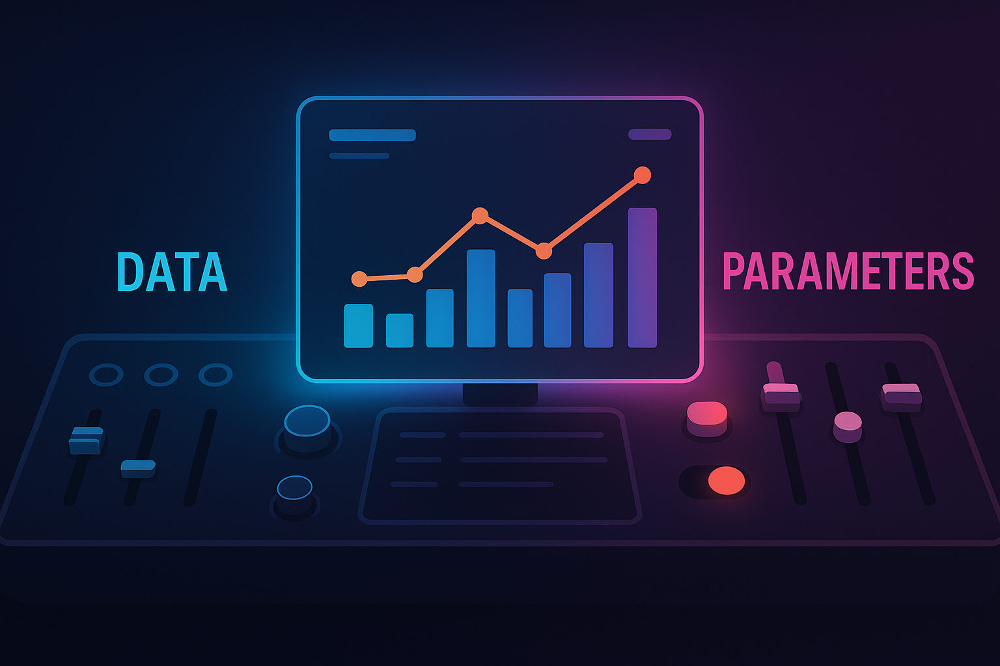

Think in Variables, Act with Parameters

The Dashboard That Thinks Back
Most dashboards look like they’re answering questions.
But the best ones let you ask new ones.
Not with code. Not with SQL.
But with sliders, switches, and dropdowns — all quietly powered by something deceptively powerful: parameters.
🔹 The Illusion of Simplicity
At a glance, BI tools look like simple aggregators:
Show me sales by region.
Filter to the last quarter.
Slice by category.
But users don’t stay in “report” mode for long. They want to compare, explore, adjust:
“What if we dropped the discount by 5%?”
“What if we looked at profit per product, not revenue?”
“What if we defined ‘high value’ customers differently?”
Most tools don’t have a true programming language embedded — but they do have parameters.
And in BI, parameters are the closest thing we get to variables.
🧠 Why This Article Exists
This article is about turning static dashboards into interactive thinking tools.
It’s about:
Making dashboards smarter without overcomplicating them
Treating users as decision-makers, not just readers
Designing logic that responds instead of just reports
Because modern BI isn’t just about delivering data.
It’s about creating interfaces where logic adapts, not just data flows.
1️⃣ Variables, Parameters, and the Illusion of Flexibility
At first glance, dashboards look dynamic. They have filters. Maybe slicers. Maybe a date picker.
But if you’ve ever tried to build a dashboard for more than one question, you know the truth:
Most dashboards are flexible only on the surface.
Underneath, they’re hard-coded to answer one type of question in one way.
This is where parameters come in — not as a UX gimmick, but as a conceptual shift.
🧠 What’s the Difference Between Data and Variables?
| Concept | In BI Terms | Example |
|---|---|---|
| Data Field | A static column from your dataset | Sales, Customer Segment, Order Date |
| Filter | A constraint applied to a field | Region = “West” |
| Parameter | A dynamic input, not tied to a field | “Threshold = 10%”, “Metric to show = Profit” |
| Variable (in logic) | A flexible placeholder in formulas | Selected_Measure, ScenarioRate |
Most BI tools don’t give you true variables like you’d find in code.
But parameters fill that gap:
They let users control logic without editing a formul
They allow calculations to respond to input
They transform dashboards from static summaries into decision sandboxes
📊 Example: The KPI Switcher
Let’s say your dashboard tracks revenue, profit, and margin.
You could:
Create three charts
Or three pages
Or… one parameter called
Selected KPI
In Tableau:
CASE [Selected KPI]
WHEN "Revenue" THEN [Revenue]
WHEN "Profit" THEN [Profit]
WHEN "Margin" THEN [Margin]
ENDIn Power BI:
KPI_Value =
SWITCH(
SELECTEDVALUE('KPI Selector'[Metric]),
"Revenue", [Total Revenue],
"Profit", [Total Profit],
"Margin", [Profit Margin]
)That one parameter replaces multiple visuals, rewrites logic on the fly, and gives users control over what question they’re asking — without changing the data.
🔍 The Illusion, Revealed
Filters change what you see.
Parameters change how the dashboard thinks.
That’s the core difference. And it’s why you should start designing for logic control, not just layout and data.
2️⃣ Where Parameters Show Up — From UX to Logic Switching
Parameters don’t always announce themselves — but they’re doing heavy lifting behind the scenes.
They show up in user controls, in calculations, in filters, and sometimes in how a dashboard tells its story.
Let’s break down the core areas where parameters add value — and how they work differently from basic filters or slicers.
🔹 1. Visual Control: One View, Many Possibilities
Parameters often power dynamic user interfaces:
KPI selector → Switch between profit, revenue, margin
Granularity control → Daily, weekly, monthly aggregation
Chart toggle → Bar vs line vs area view
Sort logic → “Top by Revenue” vs “Top by Quantity Sold”
These interactions go beyond filtering — they alter the structure or shape of what the user sees.
🔹 2. Calculation Logic: Adaptive Formulas
Parameters can change how a metric is calculated, not just which rows are shown.
Examples:
Threshold-based classification:
“Flag any product with margin < [Parameter: Margin Threshold]”
Dynamic comparisons:
“% change vs [Parameter: Comparison Period]”
Switching logic branches:
“If user selects ‘Scenario A’, apply one formula; otherwise, apply another”
This moves BI logic closer to modeling, not just visualization.
🔹 3. Filtering Behavior That Isn’t Bound to Fields
Filters are great — until they don’t fit the business question.
Parameters let you:
Filter by values that don’t exist yet (e.g. enter a custom region or threshold)
Apply logic to dimensions that don’t belong in the visual
Control what “active” or “important” means, instead of hardcoding it
You define the filter logic, and the parameter just plugs into it.
🔹 4. Interface Logic: Dynamic Layouts and UX
Especially in Tableau (and partially in Power BI), parameters can control:
Show/hide containers
Change titles and annotations
Control navigation (e.g. show different dashboards based on selection)
They’re the key to building dashboards that feel responsive and tailored — like tools, not just charts.
🧠 Summary Insight
Parameters don’t just let users pick a value —
they let users shape what kind of logic the dashboard executes.
You don’t need hundreds of dashboards.
You need a handful that can adapt intelligently.
3️⃣ What-If Scenarios — From Reporting to Simulation
Most dashboards are great at telling you what happened.
But what if you want to ask:
“What would happen if we changed something?”
This is where parameters go from useful to transformative.
With a few well-placed inputs, you can turn a dashboard from a passive summary into a lightweight simulation engine — a tool for testing assumptions and making strategic decisions.
🔹 What Counts as a What-If?
A what-if scenario allows users to manipulate an input and instantly see how outputs change.
Common use cases include:
| Scenario | Parameter Example | Metric Impact |
|---|---|---|
| Change discount rate | Slider: 0–30% | Affects profit margin & revenue |
| Test growth assumptions | Dropdown: 5%, 10%, 15% | Forecasts next year’s sales |
| Currency conversion | FX rate input (e.g. 1.08) | Changes all financial metrics |
| Adjust cost of goods | Numeric input | Recalculates profitability |
| Employee attrition | Scenario toggle: Low / Med / High | Forecasts future headcount and cost impact |
These aren’t just filters — they’re inputs that drive business logic.
🔧 How It’s Done in BI Tools
🟣 Power BI
Use a What-If Parameter Table (with DAX-generated slicer)
Reference
SELECTEDVALUE()in your measures:Adjusted Profit = [Profit] * (1 - SELECTEDVALUE('Discount Rate'[Value]))
🔵 Tableau
Create a Parameter (numeric, dropdown, etc.)
Use it in calculated fields:
[Adjusted Profit] = [Profit] * (1 - [Discount Parameter])
In both cases, you’re using parameters as substitutes for variables — letting users plug in hypothetical values to drive real calculations.
💡 Example: Scenario Planning Tile
You could design a single tile with:
Parameter: Growth Rate (5%, 10%, 15%)
Parameter: Discount Policy (slider)
Output: Revenue Forecast, Profit Impact, High-Risk Product Count
The result?
One screen — many potential futures.
A dashboard that doesn’t just report but thinks with the user.
🧠 Insight
Parameters turn dashboards into decision tools.
They move analysis from what was to what could be.
What-if dashboards don’t replace forecasting models — but they bridge the gap between insight and action.
4️⃣ Best Practices for Designing with Parameters
Parameters are powerful — but they can also backfire.
Used well, they make dashboards feel intelligent, responsive, and empowering.
Used poorly, they confuse users, clutter interfaces, and increase maintenance cost.
Let’s talk about how to use parameters thoughtfully, so they remain tools — not traps.
✅ 1. Name Like a Developer, Label Like a Human
Internal parameter names should be clear and specific (
Selected_KPI,DiscountThreshold)User-facing labels should be friendly and meaningful:
“Choose a Metric to Compare” instead of “SelectKPI1”Add tooltips where possible to explain what the parameter does
✅ 2. Set Smart Defaults
Choose a default that reflects the most common or safest value
Avoid defaulting to edge cases (“Show me Top 1000 Customers” on first load = 🔥)
In simulations, start neutral (e.g., “0% change”) to create baseline expectations
✅ 3. Don’t Overload the User
More parameters ≠ more power. It just means more complexity.
If you’re using more than 3–4 parameters on one view, reconsider your UX
Group related parameters together using visual hierarchy or layout
Consider step-by-step flows for scenario planning (e.g., input → output)
✅ 4. Make Changes Observable
When a user changes a parameter, show them the effect:
Dynamic titles: “Profit Margin with X% Discount”
Highlight updated KPIs visually (icons, animation, color change)
Use calculated fields in tooltips to explain “why this number changed”
✅ 5. Document the Logic Behind the Parameter
Especially when the parameter changes calculation paths or logic:
Annotate your calculated fields (Power BI: descriptions, Tableau: comments)
Keep a definitions sheet or “how to use this dashboard” section
Consider a toggle for “show logic/explanation” in the UI for complex dashboards
✅ 6. Keep Performance in Mind
Some parameter-driven logic can increase query complexity:
Avoid chaining too many parameters into long nested formulas
Test performance in live environments
For large models, consider pre-aggregated outputs where possible
🧠 Final Tip
Parameters should guide, not overwhelm.
If your dashboard feels like a cockpit — maybe it’s time to simplify.
Sometimes the most powerful parameter is one you decide not to show.
5️⃣ Final Thoughts — Thinking in Variables, Acting with Parameters
Business intelligence has come a long way from static reports and rigid dashboards.
But at the heart of what makes a dashboard smart isn’t just a better chart — it’s better thinking behind the chart.
And that’s what parameters enable.
They give users a way to:
Shift logic without writing code
Explore outcomes instead of just reading results
Ask “what if?” without waiting on a developer
🧠 Variables vs Parameters — Revisited
We started with the idea that data tells us what was,
but variables help us explore what could be.
BI tools don’t always give us raw variables like in programming —
but parameters get us close enough:
A parameter is a user-driven variable
embedded in the logic of a dashboard.
Used thoughtfully, parameters make dashboards:
Flexible for many users
Scalable across scenarios
Collaborative between business and BI
📣 Final Reminder
If your dashboard answers only one question, it’s a report.
If it lets users shape the question and explore outcomes,
you’ve built a thinking tool.
So: think in variables — act with parameters.
Your users will do more than click. They’ll start thinking with you.